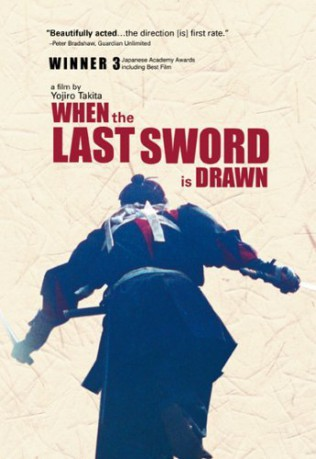
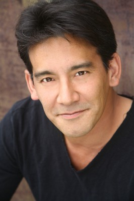

#8397 Der Letzte Feldzug der Samurai
Alternativ: Last Sword, The
 
 IMDB-Wertung: 7.6 / 10
IMDB-Wertung: 7.6 / 10  Metascore: 0
Metascore: 0 
1863, kurze Zeit vor dem Ende der Shogun-Herrschaft über Japan, bekommt der verarmte Samurai Kanichiro Yoshimura eine Anstellung als Schwertkampf-Instruktor bei der gefürchteten Shinsengumi, einer zur Wiederherstellung von Gesetz und Ordnung in Kyoto aufgestellten Truppe aus herrenlosen Samurai. Wenig später muss er sich für eine Seite im finalen Kampf des Shogunats gegen die kaiserlichen Armeen entscheiden...
Jahr: 2002
Dauer: 143 Minuten
FSK: 16
Land: Japan Studio: e-m-s the DVD-CompanyTonspuren:
Untertitel: Deutsch,
Auflösung: 1080p (1776x1080) Größe: 10076 MB
Genre: Drama
Regisseur: Yôjirô Takita
Drehbuch: Jirô Asada, Takehiro Nakajima
Soundtrack: Joe Hisaishi
Darsteller:
- Kiichi Nakai als Kanichiro Yoshimura
 Miki Nakatani als Nui
Miki Nakatani als Nui Masayoshi Haneda als
Masayoshi Haneda als - Hideaki Itô als Yoshinobu Tokugawa
- Ryo Kase als Shûhei Kondô
-  Eugene Nomura als Toshizô Hijikata
 Kôichi Satô als Hajime Saitô
Kôichi Satô als Hajime Saitô- Yui Natsukawa als Shizu / Mitsu
- Takehiro Murata als Chiaki Ono
- Yûji Miyake als Jiroemon Ono
- Yoshinori Hiruma als Shinpachi Nagakura
- Keisuke Horibe als Yasunoshin Shinohara
- Atsushi Itô als Young Chiaki Ono
- Momo Nakayama als Young Mitsu Yoshimura
- Ayumu Saitô als Kashitaro Itô
- Masato Sakai als Sôji Okita
- Sansei Shiomi als Isami Kondô
- Kôji Tsukamoto als Sonoyama
- Sora Tôma als Kaichirô Yoshimura
- Dai Watanabe als
- Tatsuo Yamada als Sasuke
- Akihiro Ôishi als
Datei: X:\HD-Eastern-Classic(A-M)\Letzte Feldzug der Samurai, Der (2002, FSK16, 1776x1080).mkv seit 28.02.2018
Festplatte: HD Eastern+Western
 Es gibt insgesamt 63 Filme in der Gruppe 'HD-Eastern-Classic(A-M)'
Es gibt insgesamt 63 Filme in der Gruppe 'HD-Eastern-Classic(A-M)'